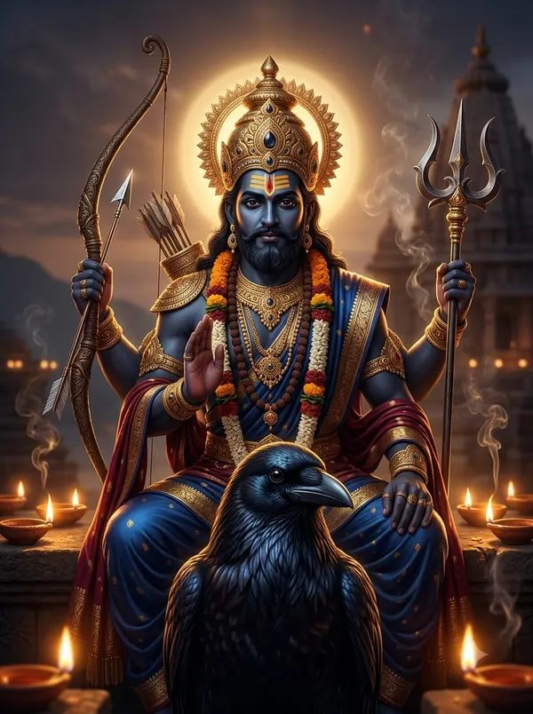
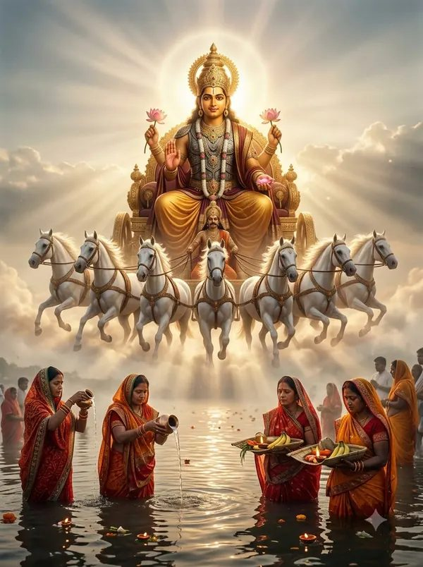

आज का WhatsApp संदेश
हर रात 12 बजे अपने-आप नया संदेश बनता है। कॉपी करें → फोटो डाउनलोड करें → चैनल में भेजें।
आज — 17 अक्टूबर 2026, शनिवार

🙏 *जय शनिदेव* 🙏 📅 *17 अक्टूबर 2026, शनिवार* 🕉️ *आज का पंचांग* 🌙 तिथि: शुक्ल पक्ष सप्तमी (आश्विन मास) ⭐ नक्षत्र: मूल 🌅 सूर्योदय सुबह 6:23 | 🌇 सूर्यास्त शाम 5:49 ✨ अभिजीत मुहूर्त: सुबह 11:43 – दोपहर 12:29 ⚠️ राहु काल: सुबह 9:14 – सुबह 10:40 🪔 *आज के व्रत-त्योहार* • नवरात्रि — माँ कालरात्रि 📿 शनिवार — शनिदेव और हनुमान जी का दिन आज पढ़ें: *शनि चालीसा* (अर्थ सहित) https://omkiranbhakti.github.io/shani-chalisa.html 🔔 *आने वाले त्योहार* • 20 अक्टूबर — दशहरा (विजयादशमी) • 22 अक्टूबर — पापांकुशा एकादशी • 25 अक्टूबर — शरद पूर्णिमा • 26 अक्टूबर — आश्विन पूर्णिमा 🛕 मंदिरों के लाइव दर्शन: https://omkiranbhakti.github.io/live-darshan.html 📖 पूरा पंचांग: https://omkiranbhakti.github.io/aaj-ka-panchang.html — *OmKiran Bhakti* 🙏 चैनल को शेयर करें

कल — 18 अक्टूबर 2026, रविवार

🙏 *ॐ सूर्याय नमः* 🙏 📅 *18 अक्टूबर 2026, रविवार* 🕉️ *आज का पंचांग* 🌙 तिथि: शुक्ल पक्ष सप्तमी (आश्विन मास) ⭐ नक्षत्र: पूर्वाषाढ़ा 🌅 सूर्योदय सुबह 6:23 | 🌇 सूर्यास्त शाम 5:48 ✨ अभिजीत मुहूर्त: सुबह 11:43 – दोपहर 12:29 ⚠️ राहु काल: शाम 4:23 – शाम 5:48 🪔 *आज के व्रत-त्योहार* • नवरात्रि — माँ महागौरी 📿 रविवार — सूर्यदेव का दिन आज पढ़ें: *आदित्य हृदय स्तोत्र* (अर्थ सहित) https://omkiranbhakti.github.io/aditya-hridaya-stotra.html 🔔 *आने वाले त्योहार* • 20 अक्टूबर — दशहरा (विजयादशमी) • 22 अक्टूबर — पापांकुशा एकादशी • 25 अक्टूबर — शरद पूर्णिमा • 26 अक्टूबर — आश्विन पूर्णिमा 🛕 मंदिरों के लाइव दर्शन: https://omkiranbhakti.github.io/live-darshan.html 📖 पूरा पंचांग: https://omkiranbhakti.github.io/aaj-ka-panchang.html — *OmKiran Bhakti* 🙏 चैनल को शेयर करें